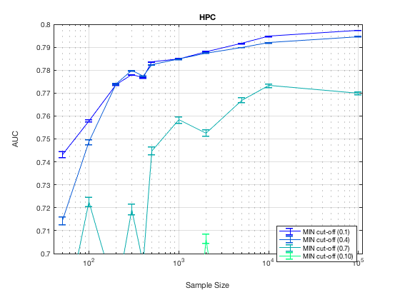
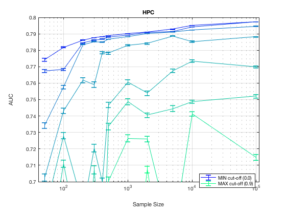

TieNet. Summary. HPC.
summary_stable_vars("TieNet", 1)
Figure 49. Model Generalizatbility. HPC
________________________________________

Figure 50. Feature Generalizability. HPC
_________________________________________

Table 49. Stability Cut Off Performance. Sample Size = 50. HPC.
________________________________________________________________
Stability Model_Generalizability Feature_Generalizability Number_Stable_Features Number_Non_Zero
_________ ______________________ ________________________ ______________________ _______________
'>= 0%' ' 0.743 +/- 0.001 ' ' 0.732 +/- 0.001 ' ' 5.0 +/- 0.0 ' 50
'>=10%' ' 0.744 +/- 0.001 ' ' 0.732 +/- 0.001 ' ' 5.0 +/- 0.0 ' 50
'>=20%' ' 0.737 +/- 0.001 ' ' 0.704 +/- 0.002 ' ' 3.1 +/- 0.0 ' 50
'>=30%' ' 0.714 +/- 0.002 ' ' 0.679 +/- 0.002 ' ' 1.5 +/- 0.0 ' 45
'>=40%' ' 0.715 +/- 0.002 ' ' 0.680 +/- 0.002 ' ' 1.5 +/- 0.0 ' 45
'>=50%' ' 0.687 +/- 0.002 ' ' 0.678 +/- 0.002 ' ' 1.3 +/- 0.0 ' 32
'>=60%' ' 0.668 +/- 0.002 ' ' 0.649 +/- 0.002 ' ' 1.2 +/- 0.0 ' 27
'>=70%' ' 0.640 +/- 0.003 ' ' 0.645 +/- 0.003 ' ' 1.1 +/- 0.0 ' 19
'>=80%' ' 0.637 +/- 0.003 ' ' 0.618 +/- 0.003 ' ' 1.0 +/- 0.0 ' 14
'>=90%' ' 0.610 +/- 0.003 ' ' 0.604 +/- 0.003 ' ' 1.0 +/- 0.0 ' 6
Table 50. Stability Cut Off Performance. Sample Size = 100. HPC.
_________________________________________________________________
Stability Model_Generalizability Feature_Generalizability Number_Stable_Features Number_Non_Zero
_________ ______________________ ________________________ ______________________ _______________
'>= 0%' ' 0.758 +/- 0.001 ' ' 0.760 +/- 0.001 ' ' 5.9 +/- 0.0 ' 50
'>=10%' ' 0.759 +/- 0.001 ' ' 0.762 +/- 0.001 ' ' 5.9 +/- 0.0 ' 50
'>=20%' ' 0.755 +/- 0.001 ' ' 0.760 +/- 0.001 ' ' 3.4 +/- 0.0 ' 50
'>=30%' ' 0.749 +/- 0.001 ' ' 0.727 +/- 0.002 ' ' 1.6 +/- 0.0 ' 47
'>=40%' ' 0.750 +/- 0.001 ' ' 0.729 +/- 0.002 ' ' 1.6 +/- 0.0 ' 47
'>=50%' ' 0.738 +/- 0.002 ' ' 0.728 +/- 0.002 ' ' 1.3 +/- 0.0 ' 42
'>=60%' ' 0.722 +/- 0.002 ' ' 0.745 +/- 0.001 ' ' 1.2 +/- 0.0 ' 34
'>=70%' ' 0.706 +/- 0.002 ' ' 0.745 +/- 0.001 ' ' 1.2 +/- 0.0 ' 22
'>=80%' ' 0.689 +/- 0.002 ' ' 0.745 +/- 0.001 ' ' 1.1 +/- 0.0 ' 16
'>=90%' ' 0.582 +/- 0.002 ' ' 0.719 +/- 0.001 ' ' 1.0 +/- 0.0 ' 5
Table 51. Stability Cut Off Performance. Sample Size = 200. HPC.
_________________________________________________________________
Stability Model_Generalizability Feature_Generalizability Number_Stable_Features Number_Non_Zero
_________ ______________________ ________________________ ______________________ _______________
'>= 0%' ' 0.774 +/- 0.000 ' ' 0.776 +/- 0.000 ' ' 5.3 +/- 0.0 ' 50
'>=10%' ' 0.775 +/- 0.000 ' ' 0.776 +/- 0.000 ' ' 5.3 +/- 0.0 ' 50
'>=20%' ' 0.776 +/- 0.000 ' ' 0.781 +/- 0.000 ' ' 3.6 +/- 0.0 ' 50
'>=30%' ' 0.774 +/- 0.000 ' ' 0.767 +/- 0.001 ' ' 1.9 +/- 0.0 ' 48
'>=40%' ' 0.774 +/- 0.000 ' ' 0.767 +/- 0.001 ' ' 1.9 +/- 0.0 ' 48
'>=50%' ' 0.754 +/- 0.001 ' ' 0.766 +/- 0.001 ' ' 1.5 +/- 0.0 ' 43
'>=60%' ' 0.681 +/- 0.003 ' ' 0.767 +/- 0.001 ' ' 1.2 +/- 0.0 ' 30
'>=70%' ' 0.640 +/- 0.003 ' ' 0.763 +/- 0.001 ' ' 1.1 +/- 0.0 ' 20
'>=80%' ' 0.600 +/- 0.002 ' ' 0.778 +/- 0.001 ' ' 1.2 +/- 0.0 ' 11
'>=90%' ' 0.589 +/- 0.002 ' ' 0.786 +/- 0.000 ' ' 1.1 +/- 0.0 ' 9
Table 52. Stability Cut Off Performance. Sample Size = 300. HPC.
_________________________________________________________________
Stability Model_Generalizability Feature_Generalizability Number_Stable_Features Number_Non_Zero
_________ ______________________ ________________________ ______________________ _______________
'>= 0%' ' 0.778 +/- 0.000 ' ' 0.778 +/- 0.000 ' ' 5.9 +/- 0.0 ' 50
'>=10%' ' 0.778 +/- 0.000 ' ' 0.779 +/- 0.000 ' ' 5.9 +/- 0.0 ' 50
'>=20%' ' 0.779 +/- 0.000 ' ' 0.781 +/- 0.000 ' ' 3.8 +/- 0.0 ' 50
'>=30%' ' 0.780 +/- 0.000 ' ' 0.773 +/- 0.001 ' ' 1.7 +/- 0.0 ' 50
'>=40%' ' 0.780 +/- 0.000 ' ' 0.773 +/- 0.001 ' ' 1.7 +/- 0.0 ' 50
'>=50%' ' 0.755 +/- 0.002 ' ' 0.770 +/- 0.001 ' ' 1.4 +/- 0.0 ' 42
'>=60%' ' 0.719 +/- 0.002 ' ' 0.769 +/- 0.001 ' ' 1.1 +/- 0.0 ' 33
'>=70%' ' 0.707 +/- 0.002 ' ' 0.772 +/- 0.001 ' ' 1.0 +/- 0.0 ' 23
'>=80%' ' 0.684 +/- 0.003 ' ' 0.768 +/- 0.001 ' ' 1.1 +/- 0.0 ' 15
'>=90%' ' 0.673 +/- 0.002 ' ' 0.766 +/- 0.001 ' ' 1.2 +/- 0.1 ' 6
Table 53. Stability Cut Off Performance. Sample Size = 400. HPC.
_________________________________________________________________
Stability Model_Generalizability Feature_Generalizability Number_Stable_Features Number_Non_Zero
_________ ______________________ ________________________ ______________________ _______________
'>= 0%' ' 0.777 +/- 0.000 ' ' 0.777 +/- 0.000 ' ' 7.8 +/- 0.0 ' 50
'>=10%' ' 0.777 +/- 0.000 ' ' 0.777 +/- 0.000 ' ' 7.8 +/- 0.0 ' 50
'>=20%' ' 0.778 +/- 0.000 ' ' 0.782 +/- 0.000 ' ' 4.8 +/- 0.0 ' 50
'>=30%' ' 0.777 +/- 0.000 ' ' 0.775 +/- 0.000 ' ' 2.4 +/- 0.0 ' 50
'>=40%' ' 0.777 +/- 0.000 ' ' 0.774 +/- 0.000 ' ' 2.4 +/- 0.0 ' 50
'>=50%' ' 0.771 +/- 0.001 ' ' 0.764 +/- 0.001 ' ' 1.9 +/- 0.0 ' 43
'>=60%' ' 0.696 +/- 0.003 ' ' 0.777 +/- 0.000 ' ' 1.3 +/- 0.0 ' 33
'>=70%' ' 0.636 +/- 0.003 ' ' 0.777 +/- 0.000 ' ' 1.0 +/- 0.0 ' 21
'>=80%' ' 0.618 +/- 0.003 ' ' 0.781 +/- 0.000 ' ' 1.1 +/- 0.0 ' 12
'>=90%' ' 0.574 +/- 0.002 ' ' 0.770 +/- 0.001 ' ' 1.0 +/- 0.0 ' 7
Table 54. Stability Cut Off Performance. Sample Size = 500. HPC.
_________________________________________________________________
Stability Model_Generalizability Feature_Generalizability Number_Stable_Features Number_Non_Zero
_________ ______________________ ________________________ ______________________ _______________
'>= 0%' ' 0.784 +/- 0.000 ' ' 0.780 +/- 0.000 ' ' 7.1 +/- 0.1 ' 50
'>=10%' ' 0.783 +/- 0.000 ' ' 0.779 +/- 0.000 ' ' 7.1 +/- 0.1 ' 50
'>=20%' ' 0.784 +/- 0.000 ' ' 0.782 +/- 0.000 ' ' 4.7 +/- 0.0 ' 50
'>=30%' ' 0.782 +/- 0.000 ' ' 0.782 +/- 0.000 ' ' 2.2 +/- 0.0 ' 50
'>=40%' ' 0.783 +/- 0.000 ' ' 0.782 +/- 0.000 ' ' 2.2 +/- 0.0 ' 50
'>=50%' ' 0.774 +/- 0.001 ' ' 0.781 +/- 0.000 ' ' 1.5 +/- 0.0 ' 45
'>=60%' ' 0.745 +/- 0.002 ' ' 0.774 +/- 0.001 ' ' 1.2 +/- 0.0 ' 36
'>=70%' ' 0.732 +/- 0.002 ' ' 0.774 +/- 0.001 ' ' 1.1 +/- 0.0 ' 20
'>=80%' ' 0.698 +/- 0.002 ' ' 0.782 +/- 0.000 ' ' 1.1 +/- 0.0 ' 12
'>=90%' ' 0.595 +/- 0.002 ' ' 0.786 +/- 0.000 ' ' 1.0 +/- 0.0 ' 5
Table 55. Stability Cut Off Performance. Sample Size = 1000. HPC.
__________________________________________________________________
Stability Model_Generalizability Feature_Generalizability Number_Stable_Features Number_Non_Zero
_________ ______________________ ________________________ ______________________ _______________
'>= 0%' ' 0.785 +/- 0.000 ' ' 0.780 +/- 0.000 ' ' 8.7 +/- 0.0 ' 50
'>=10%' ' 0.785 +/- 0.000 ' ' 0.781 +/- 0.000 ' ' 8.7 +/- 0.0 ' 50
'>=20%' ' 0.785 +/- 0.000 ' ' 0.783 +/- 0.000 ' ' 5.3 +/- 0.0 ' 50
'>=30%' ' 0.785 +/- 0.000 ' ' 0.782 +/- 0.000 ' ' 2.2 +/- 0.0 ' 50
'>=40%' ' 0.785 +/- 0.000 ' ' 0.782 +/- 0.000 ' ' 2.2 +/- 0.0 ' 50
'>=50%' ' 0.780 +/- 0.000 ' ' 0.785 +/- 0.000 ' ' 1.8 +/- 0.0 ' 49
'>=60%' ' 0.758 +/- 0.001 ' ' 0.778 +/- 0.001 ' ' 1.4 +/- 0.0 ' 44
'>=70%' ' 0.747 +/- 0.002 ' ' 0.770 +/- 0.001 ' ' 1.3 +/- 0.0 ' 24
'>=80%' ' 0.725 +/- 0.002 ' ' 0.764 +/- 0.001 ' ' 1.2 +/- 0.0 ' 16
'>=90%' ' 0.592 +/- 0.002 ' ' 0.766 +/- 0.001 ' ' 1.2 +/- 0.1 ' 5
Table 56. Stability Cut Off Performance. Sample Size = 2000. HPC.
__________________________________________________________________
Stability Model_Generalizability Feature_Generalizability Number_Stable_Features Number_Non_Zero
_________ ______________________ ________________________ ______________________ _______________
'>= 0%' ' 0.788 +/- 0.000 ' ' 0.784 +/- 0.000 ' ' 10.4 +/- 0.0 ' 50
'>=10%' ' 0.788 +/- 0.000 ' ' 0.784 +/- 0.000 ' ' 10.4 +/- 0.0 ' 50
'>=20%' ' 0.788 +/- 0.000 ' ' 0.786 +/- 0.000 ' ' 6.8 +/- 0.0 ' 50
'>=30%' ' 0.788 +/- 0.000 ' ' 0.787 +/- 0.000 ' ' 3.4 +/- 0.0 ' 50
'>=40%' ' 0.788 +/- 0.000 ' ' 0.787 +/- 0.000 ' ' 3.4 +/- 0.0 ' 50
'>=50%' ' 0.782 +/- 0.000 ' ' 0.786 +/- 0.000 ' ' 2.4 +/- 0.0 ' 50
'>=60%' ' 0.753 +/- 0.001 ' ' 0.782 +/- 0.000 ' ' 1.7 +/- 0.0 ' 44
'>=70%' ' 0.740 +/- 0.001 ' ' 0.781 +/- 0.000 ' ' 1.4 +/- 0.0 ' 30
'>=80%' ' 0.725 +/- 0.002 ' ' 0.768 +/- 0.001 ' ' 1.2 +/- 0.0 ' 16
'>=90%' ' 0.707 +/- 0.002 ' ' 0.776 +/- 0.001 ' ' 1.1 +/- 0.0 ' 9
Table 57. Stability Cut Off Performance. Sample Size = 5000. HPC.
__________________________________________________________________
Stability Model_Generalizability Feature_Generalizability Number_Stable_Features Number_Non_Zero
_________ ______________________ ________________________ ______________________ _______________
'>= 0%' ' 0.792 +/- 0.000 ' ' 0.789 +/- 0.000 ' ' 13.7 +/- 0.0 ' 50
'>=10%' ' 0.792 +/- 0.000 ' ' 0.789 +/- 0.000 ' ' 13.7 +/- 0.0 ' 50
'>=20%' ' 0.791 +/- 0.000 ' ' 0.791 +/- 0.000 ' ' 8.7 +/- 0.0 ' 50
'>=30%' ' 0.790 +/- 0.000 ' ' 0.793 +/- 0.000 ' ' 4.2 +/- 0.0 ' 50
'>=40%' ' 0.790 +/- 0.000 ' ' 0.793 +/- 0.000 ' ' 4.2 +/- 0.0 ' 50
'>=50%' ' 0.788 +/- 0.000 ' ' 0.793 +/- 0.000 ' ' 2.9 +/- 0.0 ' 50
'>=60%' ' 0.767 +/- 0.001 ' ' 0.793 +/- 0.000 ' ' 2.0 +/- 0.0 ' 47
'>=70%' ' 0.744 +/- 0.002 ' ' 0.791 +/- 0.000 ' ' 1.4 +/- 0.0 ' 38
'>=80%' ' 0.665 +/- 0.002 ' ' 0.789 +/- 0.000 ' ' 1.3 +/- 0.0 ' 19
'>=90%' ' 0.613 +/- 0.003 ' ' 0.787 +/- 0.000 ' ' 1.2 +/- 0.0 ' 9
Table 58. Stability Cut Off Performance. Sample Size = 10000. HPC.
___________________________________________________________________
Stability Model_Generalizability Feature_Generalizability Number_Stable_Features Number_Non_Zero
_________ ______________________ ________________________ ______________________ _______________
'>= 0%' ' 0.795 +/- 0.000 ' ' 0.793 +/- 0.000 ' ' 16.3 +/- 0.0 ' 50
'>=10%' ' 0.795 +/- 0.000 ' ' 0.793 +/- 0.000 ' ' 16.3 +/- 0.0 ' 50
'>=20%' ' 0.794 +/- 0.000 ' ' 0.794 +/- 0.000 ' ' 10.7 +/- 0.0 ' 50
'>=30%' ' 0.792 +/- 0.000 ' ' 0.795 +/- 0.000 ' ' 4.6 +/- 0.0 ' 50
'>=40%' ' 0.792 +/- 0.000 ' ' 0.795 +/- 0.000 ' ' 4.6 +/- 0.0 ' 50
'>=50%' ' 0.785 +/- 0.000 ' ' 0.796 +/- 0.000 ' ' 3.1 +/- 0.0 ' 50
'>=60%' ' 0.773 +/- 0.001 ' ' 0.796 +/- 0.000 ' ' 2.0 +/- 0.0 ' 46
'>=70%' ' 0.749 +/- 0.001 ' ' 0.796 +/- 0.000 ' ' 1.3 +/- 0.0 ' 36
'>=80%' ' 0.741 +/- 0.001 ' ' 0.796 +/- 0.000 ' ' 1.1 +/- 0.0 ' 17
'>=90%' ' 0.695 +/- 0.002 ' ' 0.794 +/- 0.000 ' ' 1.0 +/- 0.0 ' 6
Table 59. Stability Cut Off Performance. Sample Size = 100000. HPC.
____________________________________________________________________
Stability Model_Generalizability Feature_Generalizability Number_Stable_Features Number_Non_Zero
_________ ______________________ ________________________ ______________________ _______________
'>= 0%' ' 0.797 +/- 0.000 ' ' 0.797 +/- 0.000 ' ' 18.5 +/- 0.0 ' 50
'>=10%' ' 0.797 +/- 0.000 ' ' 0.797 +/- 0.000 ' ' 18.5 +/- 0.0 ' 50
'>=20%' ' 0.797 +/- 0.000 ' ' 0.797 +/- 0.000 ' ' 12.6 +/- 0.0 ' 50
'>=30%' ' 0.795 +/- 0.000 ' ' 0.797 +/- 0.000 ' ' 5.5 +/- 0.0 ' 50
'>=40%' ' 0.795 +/- 0.000 ' ' 0.797 +/- 0.000 ' ' 5.5 +/- 0.0 ' 50
'>=50%' ' 0.788 +/- 0.000 ' ' 0.797 +/- 0.000 ' ' 3.7 +/- 0.0 ' 50
'>=60%' ' 0.770 +/- 0.001 ' ' 0.797 +/- 0.000 ' ' 2.1 +/- 0.0 ' 49
'>=70%' ' 0.752 +/- 0.001 ' ' 0.797 +/- 0.000 ' ' 1.5 +/- 0.0 ' 41
'>=80%' ' 0.715 +/- 0.002 ' ' 0.797 +/- 0.000 ' ' 1.2 +/- 0.0 ' 22
'>=90%' ' 0.694 +/- 0.002 ' ' 0.797 +/- 0.000 ' ' 1.2 +/- 0.0 ' 13